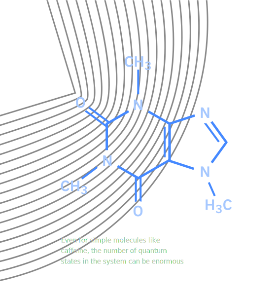

What is quantum computing?
Quantum computers could spur the development of new breakthroughs in science, medications to save lives, machine learning methods to diagnose illnesses sooner, materials to make more efficient devices and structures, financial strategies to live well in retirement, and algorithms to quickly direct resources such as ambulances. But what exactly is quantum computing, and what does it take to achieve these quantum breakthroughs? Here’s what you need to know.

Quantum computing fundamentals
All computing systems rely on a fundamental ability to store and manipulate information. Current computers manipulate individual bits, which store information as binary 0 and 1 states. Quantum computers leverage quantum mechanical phenomena to manipulate information. To do this, they rely on quantum bits, or qubits. Here, learn about the quantum properties leveraged by qubits, how they're used to compute, and how quantum systems scale.
History of quantum computing?
How did we get here?
Today, real quantum processors are used by researchers from all over the world to test out algorithms for applications in a variety of fields. But it was only a few decades ago that quantum computing was a purely theoretical subject.
